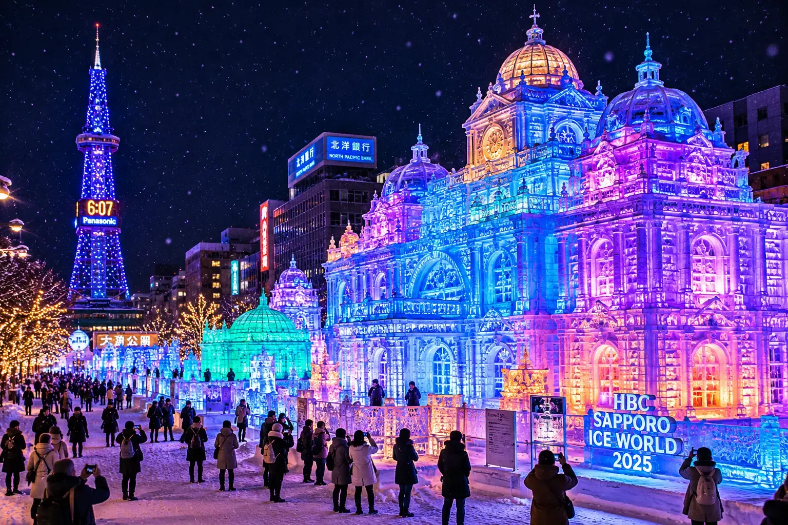
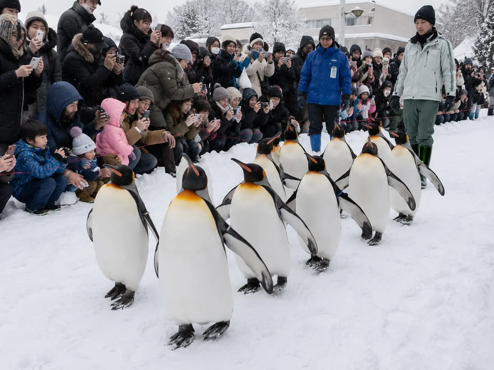
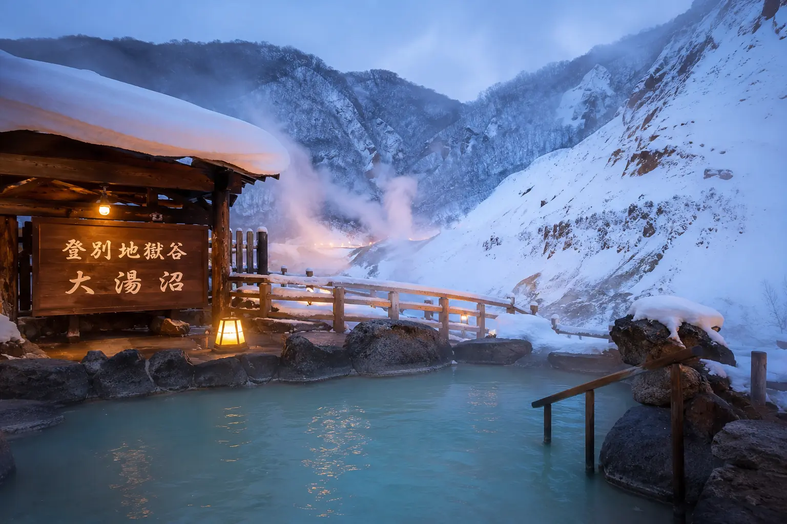

🏔️ 必去景點 Top 5
No.1
小樽運河 — 雪中浪漫散步
冬天的小樽運河是北海道最經典的雪景。運河兩旁的紅磚倉庫覆蓋白雪，搭配瓦斯燈倒影，走在石板路上彷彿穿越時空。
- 最佳時間：黃昏到夜間（瓦斯燈點燈後更美）
- 交通：札幌搭JR函館線到小樽站，約32分鐘
- 順遊：小樽音樂盒堂、堺町通商店街、天狗山纜車看夜景
📝 小編個人體驗：小樽運河的黃昏超級浪漫！瓦斯燈點亮時，搭配運河上的雪景氛圍，我站在運河邊看了半小時都不想走。推薦傍晚4點到，这样可以看到天色从蓝变成橘黄的渐变过程。
No.2
札幌雪祭 — 世界級冰雕盛典
每年2月上旬舉辦，大通會場展出超過100座大型雪雕，夜間搭配燈光秀超壯觀。TSUDOME會場有雪上溜滑梯等免費體驗。
- 時間：通常2月4-11日（每年略有不同）
- 會場：大通公園（雪雕）、TSUDOME（雪上活動）、薄野（冰雕）
- 費用：免費參觀，部分活動收費

📝 小編個人體驗：札幌雪祭的规模真的很震撼！100多座雪雕，最夸张的一座高达15米。我在現場凍了3小時，但看到夜间点灯的那一刻，真的觉得一切都值得了。建议穿夠保暖衣物!
No.3
函館山 — 百萬夜景
函館山夜景被譽為「世界三大夜景」之一，冬天積雪的市街兩側閃爍燈光，宛如散落的寶石。搭纜車3分鐘即達山頂。
- 纜車費用：來回¥1,280
- 最佳時間：日落前30分鐘上山，可同時看夕陽+夜景
- 注意：冬季纜車可能因強風停駛，出發前確認官網
No.4
旭山動物園 — 企鵝散步
冬天最人氣的活動就是看企鵝排隊散步！國王企鵝每天兩次在園區內自由行走，超萌畫面讓人融化。還有北極熊跳水、海豹旋轉泳等行為展示。
- 企鵝散步：每日11:00和14:30（12月中旬-3月中旬）
- 門票：成人¥1,000
- 交通：旭川站搭巴士約40分鐘

📝 小編個人體驗：企鹅散步根本是北海道冬天的招牌！看企鹅摇摇晃晃走路，我笑到肚子痛。每天两场(11:00和14:30)，建议提早30分钟排队抢前面的位置，才能拍到近照!
No.5
登別地獄谷 — 雪景露天風呂
火山地熱讓登別一年四季都有溫泉，冬天泡露天風呂一邊看雪花飄落，一邊感受熱氣蒸騰，冰火交融的體驗超難忘。
- 泉質：硫磺泉、食鹽泉等9種泉質，日本少見
- 交通：札幌搭JR到登別站，轉巴士15分鐘

📝 小編個人體驗：登别温泉的露天风吕太赞了！一边泡汤一边看雪花飘下来，周围都是白茫茫的雪，呼吸着冷空气却全身热腾腾，这种冰火体验终生难忘。注意头发会结冰!
🧥 禦寒穿搭清單
北海道1-2月氣溫 -5 到 -15°C，旭川可能低於 -20°C。洋蔥式穿法是關鍵：
- 上半身：UNIQLO發熱衣 → 刷毛中層 → 防風防水外套（羽絨或化纖）
- 下半身：發熱褲 → 刷毛褲或專業雪褲
- 腳部：防水防滑雪靴（必備！普通運動鞋會滑倒）+ 厚毛襪
- 配件：毛帽（耳朵要蓋住）、圍巾、觸控手套、暖暖貼
💡 暖暖貼使用技巧：貼在後腰和腳底最有效！不要直接貼皮膚，隔一層衣服。便利店和藥妝店都能買到（日文：カイロ）。
🚗 冬季自駕注意事項
如果你考慮在北海道冬天自駕，請先評估：
- 必須租雪胎車：日本法律規定冬季必須使用雪胎，租車公司通常已配備
- 結冰路面：即使沒下雪，路面也可能結黑冰，肉眼幾乎看不出來
- 視線不良：暴風雪時能見度可能不到10公尺
- 建議替代方案：JR北海道鐵路周遊券 + 當地一日遊巴士，安全又省心
⚠️ 重要提醒：沒有雪地駕駛經驗強烈不建議自駕！每年都有台灣遊客在北海道因結冰打滑出事故。JR+巴士完全夠用。
♨️ 溫泉推薦
| 溫泉區 | 特色 | 從札幌 |
|---|
| 登別溫泉 | 9種泉質、地獄谷雪景 | JR 1.5hr |
| 定山溪溫泉 | 最近札幌、豐平峽冰瀑 | 巴士 1hr |
| 層雲峽溫泉 | 冰瀑祭（1-3月）、銀河流星瀑布 | JR+巴士 2.5hr |
🏨
住宿推薦（Trip.com）
我實際住過的區域，CP 值高
這次在札幌我住在大通公園附近這間飯店，位置超方便，走路就能到札幌雪祭會場、薄野。房間乾淨、CP 值很高，目前在 Trip.com 上還有不錯的優惠：
🔗 立即查看最新價格與空房
（冬天去札幌強烈建議住大通附近，雪祭期間走路就能到會場，不用擔心末班車）
❓ 常見問題
北海道冬天幾度？
1-2月平均氣溫-5到-15°C，旭川可低至-20°C。體感溫度更低，需做好防風防寒準備。
北海道冬天幾天夠玩？
最少5天4夜：札幌2天+小樽1天+富良野或旭川1天。若加旭山動物園和溫泉，建議7天6夜。冬天交通較慢，時間要預留充裕。
北海道冬天租車安全嗎？
有雪地駕駛經驗可以租車，車行會提供雪胎。但新手不建議，路面积雪結冰危險。推荐搭JR或巴士，北海道JR周遊券（Hokkaido Rail Pass）7天約¥16,000很划算。
札幌雪祭什麼時候？
每年2月上旬（通常2月5-12日），在大通公園舉行。有巨型雪雕和冰雕，晚上有燈光秀。建議提前3-6個月訂房，這段時間住宿價格翻倍。
北海道冬天要帶什麼裝備？
必帶：防風羽絨外套、保暖內衣（Heattech）、防滑雪靴、毛帽圍巾手套、暖暖包。選帶：雪鏡、防滑鞋套、暖暖貼。機場和便利店也能買到保暖用品。
北海道有什麼必吃美食？
①味噌拉麵（札幌）②海鮮丼（函館朝市）③湯咖喱（札幌）④成吉思汗烤肉（旭川）⑤白色戀人冰淇淋（小樽）⑥札幌啤酒。冬天吃熱騰騰的拉麵最幸福！